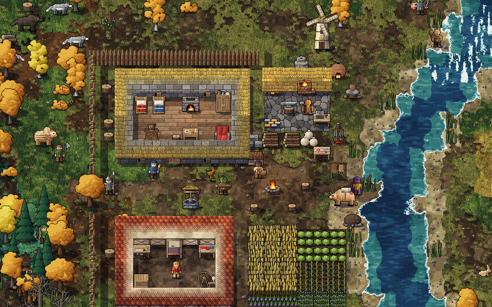
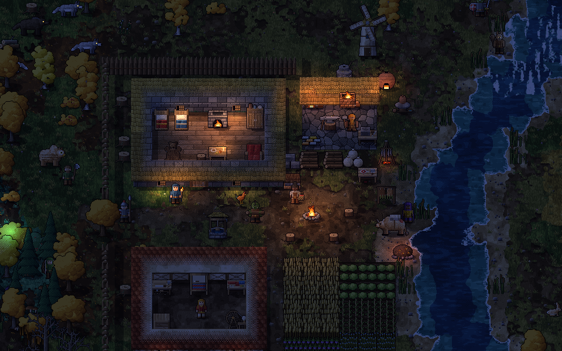
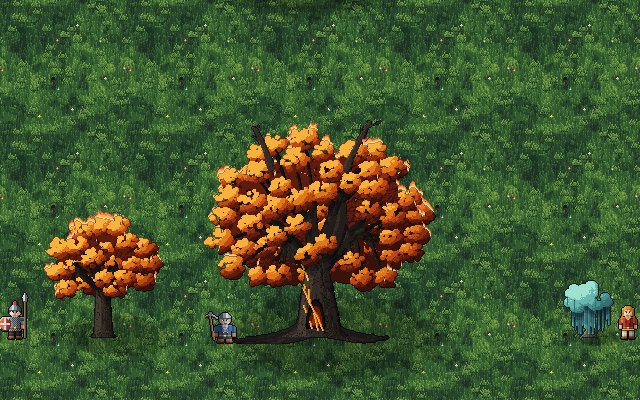

Devlog #1, written from origin/dev..origin/test/look-overhaul (301 non-merge commits, 21 Nov 06:21 to 26 Nov 11:37, 2026) and the issues those commits cite. “Before” is the glyph renderer dev draws; “after” is composed scenes from the mockups. Narration is a TTS voice, first person. A hash beside a beat is the commit that beat's claim comes from.
Title
Pick: “My Colony Sim Was Ugly. I Repainted It in 5 Days With Claude” recommended
It keeps the confession and the time limit from the working title and puts the disclosure where the click happens. 294 of the 301 commits are co-authored by Claude, so a viewer who dislikes that learns it before the click, not in the comments. “Claude” also names the tool people search for, where “AI” reads as image generation. Run D against it if the channel has title testing.
- AMy Colony Sim Was Ugly. I Repainted It in 5 Days With Claude pick
- B301 Commits in 5 Days: Repainting My Colony Sim With AI Agents with AI — the number carries it; weaker confession, stronger for the agent-workflow audience.
- CI Let Claude Repaint My Ugly Colony Sim. Here's Every Step with AI — AI is the subject, not a footnote. Highest backlash risk, clearest promise.
- DMy Colony Sim Was Ugly. So I Repainted It in 5 Days without — the working title. Best raw click, but the disclosure then lands at 0:16 on a viewer who did not choose it.
- EThis Is What My Game Looked Like 5 Days Ago without — the cold-open line as the title; good for the first Short.
- FTiles Are the Problem: A Complete Pixel Art Overhaul in 5 Days without — technique-first, for search on pixel art rendering.
Whatever the title: the disclosure line at 0:16 stays, and the description and a pinned comment repeat it with the scope (code, shaders, the code-drawn art, this narration voice).
What the history says
| Fact | Value | Where it comes from |
|---|---|---|
| Span | 5 days 9 hours | Painted groundwork on dev from 12c07246 (21 Nov 02:20) to 9659211b (26 Nov 11:37). The branch itself starts at 9086b016, 21 Nov 06:21. |
| Commits | 301 | git log --no-merges origin/dev..origin/test/look-overhaul. 286 unique patches: some landed twice through combined branches. Plus 113 merges. |
| Per day | 82 · 43 · 115 · 52 · 6 · 3 | 21 to 26 Nov, same range, by commit date. |
| Kinds | 148 feat · 82 fix · 24 perf · 20 test | Commit type prefixes in the range. |
| Co-authored by Claude | 294 of 301 | Co-Authored-By trailers: 270 Opus 5.5, 15 Fable 5.2, 9 Sonnet 5.5. |
| Agent sessions | 23 named | Distinct Claude-Session trailers; the trailer only exists from 035f7487 (23 Nov 18:17), so the real count is higher. |
| Mockups | 57 of 59 | Commits on mockups/live ahead of dev that carry a Claude trailer. 72 commits in the overhaul name a mockup in their message. |
| Before the overhaul | 2,677 commits | git rev-list --count --before=2026-11-21 origin/dev, first commit b18bf4a5, 29 Jun 2025. |
Full script · about 9:08
| # | Section | Starts | Length | Job |
|---|---|---|---|---|
| 0 | Cold open | 0:00 | 0:16 | Old look, hard cut, promise. |
| 1 | Disclosure and stakes | 0:16 | 0:36 | AI, said plainly; three open loops. |
| 2 | The game so far | 0:52 | 0:46 | What it is; three moments from 2,677 commits. |
| 3 | The loop | 1:38 | 0:38 | How the work was actually done. |
| 4 | Step 1 · Ground | 2:16 | 1:10 | The grid dies. |
| 5 | Step 2 · Light | 3:26 | 1:02 | Stepped light, a second atlas, an honest gap. |
| 6 | Detour · The mountain | 4:28 | 0:32 | Pays loop one. Pattern interrupt. |
| 7 | Step 3 · Water | 5:00 | 0:50 | Depth, shore, wind, rivers. |
| 8 | Step 4 · Wind and trees | 5:50 | 1:16 | Pays loop two: the flicker. |
| 9 | Step 5 · The bill | 7:06 | 1:22 | Pays loop three: 244 ms. |
| 10 | Outro | 8:28 | 0:40 | What is not done; one ask. |




The hard cut goes to the HUD mockup's colony at 13:00 (A1): it is the one scene with houses, a river, fields, colonists and trees in a single frame, and it answers the “before” shot's stone house with a house. The tree-ground forest (A2) is the second pan.
This is what my game looked like.
B1. Glyph renderer, close on the stone house. Slow pan left to right, 5 s. No music; room tone only.
d003267bAnd this is what it looks like now.
A1. Hard cut on “now”, music in on the cut. HUD mockup colony at 13:00, wind on, slow pan from the river across the houses, 5 s.
66dee6b0Here is exactly how I achieved this complete graphics overhaul in five days.
A2. Second pan, the tree-ground forest. Counter ticks up from 0 to 301 commits over a 21–26 Nov date bar.
9086b0169659211bOne thing first, so nobody feels tricked ten minutes in. I built this with AI. Heavily.
All but seven of those three hundred and one commits are co-signed by Claude. The code. The shaders. Even the art, because in this game, the art is code.
W3. Terminal: git log of the branch scrolling, every Co-Authored-By: Claude line lit. Big number: 294 / 301.
9086b016d8996be6#208If that's a dealbreaker, no hard feelings. This is your exit.
If you want to see what that workflow really looks like on a real game, stay. Because it includes a mountain range I deleted after four hours. Trees that would not stop flickering. And a single frame that took a quarter of a second.
Three one-second flashes, each with a small lock icon that opens later: the peaks (A10), the flicker (W7), a red frame graph (W5).
de30abee#410d311fc48The game is Fantasia Four X. A real-time fantasy colony sim, where every culture is procedurally generated.
I started it in June twenty twenty-five. As menus. A race screen. A building menu.
Title card over A1. Then the first commit on screen, 29 Jun 2025, with its subject line.
b18bf4a504c1875a6e873e12Then it sat for most of a year. In May twenty twenty-six I came back, and it got a real engine. A WebGL map. Pathfinding in Rust. Day and night, seasons, weather.
That June alone has almost thirteen hundred commits, and the first release you could download.
Commit-per-month bar chart, Jun 2025 to Nov 2026: the flat stretch, then the June 2026 spike. Tag v0.1.0, 25 Jun 2026.
5446f8e1b3243d3dc4e623953551f0d6So by last week there were about twenty-seven hundred commits in there. A whole simulation. And all of it was drawn as glyphs. One colour each, from an open tileset called Bitlands.
I like that tileset. But my game looked like a terminal with ambitions.
B2. Glyph renderer, wider: colonists working, a field, the map edge. Slow push-in.
d003267b9689a738Here's the workflow. Same loop for everything you're about to see.
A mockup first. A plain browser page where the look gets designed, with no game attached. I comment on it until I like it. Then it becomes an issue, a written spec. And an agent ports it into the real renderer, on its own branch.
W1. The big-trees mockup page with a comment pinned on a tree. Then W2: issue #217 scrolling, and the branch list, one branch per issue.
55359ed2492a6bd0#217#218The trick that makes it work: every sprite is a drawing function. So a bake tool runs the mockup's drawing code, and packs it into an atlas the game reads.
Tests hold the game to the mockup. And then I play it. That part is mine. I said no a lot.
Diagram, three arrows: mockup drawing code → bake → atlas → game. Counter: 1,793 sprites. The test and the “no” are shown where they happen, in steps one and two.
04eb8574d8996be6f61c689e7774572eStep one. The ground.
Here's my opinion. In a tile game, the sprites are never the problem. The grid is. Look at the old map. Every tile ends in a hard edge. You can count them.
B3. Glyph renderer, close on a grass and dirt border. Freeze, draw the grid lines over it in red.
#205So the new ground isn't tiles at all. It's one big sheet over the whole map, and a shader decides, per pixel, what kind of ground that is. It bends the borders, so grass wanders into dirt. It darkens the lip where high ground meets low.
That was the first commit on the branch.
A3. Tree-ground “grounds” scene: slow pan across four ground kinds meeting at a pond. Commit card: 21 Nov 06:21.
9086b016And it still looked wrong. Each ground was one small patch, repeating every four tiles. A carpet.
So on day three, the ground got layers. One shared field that only repeats every sixty-four tiles. Soil underneath. Grass on top, where the field says so. Pebbles, cracks and leaves scattered over it.
Grass-layers mockup, meadow region: the “Today” frame, then the “A, strict” frame, same crop. Wipe between them twice. Then the quoted line from issue #398: “Decision 3: no. It did not look right in the mockup.”
#398ce707a568b01937cAnd tufts of grass as real sprites, but only on tiles where grass actually grows. That rule matters. Nothing on the ground may look like something you can harvest. Unless you can.
A2. Tree-ground forest floor at zoom 3: tufts, litter, low plants. Slow drift.
2570c566#398Step two. Light.
The old map got one tint for the hour, the season and the weather. Flat.
The new light is painted. Every fire is a point light, and its falloff is cut into seven hard steps with a dither pattern. So it looks like pixel art, and not like a flashlight.
B4. Glyph house at night, 3 s. Cut to A5: HUD mockup at 23:30, push in on the campfire until the seven rings read.
7f33e8f1a022698eDay, dusk and night each get their own colour grade.
And then the part I love. There's a second atlas. Same layout as the colour one, but it stores glow and shadow. So a fire knows it glows. A tree knows where its shadow falls. Walls and rock throw their shadows down and to the right.
A4. Locked camera on the colony, 13:00 to 19:00 to 23:30 in 12 s. Then split screen: colour atlas left, light atlas right, same sprite.
1e3b23bb7f33e8f1Now the honest bit. I put the game next to the mockup at the same hour. And the game looked flatter.
So an agent measured it. Ninety-six times of day, game against mockup. The light itself matched. What was off was everything around it. The game showed summer art all year. It drew a vignette the mockup never had. Its water was darker.
There is a test on the light now. The rest is still open.
Light-hex mockup page: the table and its contact sheet. W4: the light test passing. Issue #380 header with the green “Open” pill.
#3801947ea7fQuick detour. I promised you a mountain range.
Mountains started as flat tops. On day four, an agent shipped fractured peaks. Gullies, ledges, an eight-stage bake on the graphics card. Maybe the most ambitious thing on the branch.
A10. Mountain-tops mockup: “today” flat top, then direction C, peaks. First lock icon opens.
150907b5fe84587d#441I reverted it the same night. Under four hours later.
[One sentence from the developer on why. The history only says “superseded”.]
What replaced it is simpler. Stepped rock tiers, worked out per pixel, in the frame they're drawn. Nothing baked ahead.
The revert commit on screen, 23:41. Then direction B, tiers, same range, slow pan. Mined cutaway toggled once.
de30abee556f9def#445Step three. Water.
Old water was one more glyph. New water has depth. Shallows, open water and rapids, in bands. A foam line within two pixels of land. A wet sand line a little further out. Reeds on a fifth of the riverbank tiles.
B5. Glyph river, 3 s. Cut to A6: the colony's river, zoomed, slow pan downstream along the shore.
56ccd47c#216Then it had to move. So there's a wave field, driven by the wind. Gusts cross a lake in patches. Rain drops rings on it.
A6. Same river, weather switched from clear to windy to rain.
7d6db9531d7ddef2#424And rivers? I like this one. A river is just lake water, pushed downstream by a current. Same shader. One extra field that says which way is down.
Tree-ground “water” scene. Overlay: small arrows along the river course.
7dbd94994ef5a72eStep four. Wind. This is where it came alive. And where it broke.
Day three. Plants start bending in the wind. Gusts travel across the map. Leaves fall. More in autumn, none in winter.
A7. Big-trees forest, wind stepped from still to breeze to windy to gale.
5cf1f385#401It looked great in motion. Then I paused the game. Wind set to still. And the trees kept flickering. Thin, one-pixel stripes, on every plant. About two percent of the screen, changing every single frame.
W7. The flicker capture, full screen, then 4× zoom on one tree. Second lock icon opens.
#410The cause was two shaders disagreeing. One leaned the sprite by a smooth amount. The other rounded that lean to whole art pixels. Between them, columns of pixels flipped back and forth.
The fix: lean in whole art pixels. Everywhere. In the test rig, at one zoom level, that took it from thirty-six thousand changing pixels a frame, down to three.
I still have to confirm it on my own screen. So that issue stays open too.
Two-line diagram of the lean, smooth against stepped. Then the row from the issue's table: 36,469 → 3, labelled “software rendering, 16 px tiles, wind still”.
ec9bc28f#410And once the wind worked, the trees got big. Young and mature versions of every tree, in three seasons. They cut away around a colonist standing behind them. Trunk, boughs and leaves move separately.
And on about one map in four, one magical tree grows into an elder. The emberwood sheds flame through its leaves.
A8. Cutaway toggled on a colonist behind an oak. Then A9: the emberwood elder at night, slow push-in, flame and motes.
739309329051efa4099cd0f55d74cba9c8cacec8Step five. The bill.
All of this costs frames. And for a while, it cost too many.
Shadows were being rebuilt for every visible tile, on almost every frame. Now: at most four times a second while the camera stands still.
A9 keeps running, then freezes and desaturates. Text card: “shadows: every frame → 4 per second”.
53e344e7337cd6b9Lights were being looked up for every light on the map, every frame, even paused. With that lookup switched off, a paused frame went from about five milliseconds of script to under one. So now it only runs for the lights near the view.
Text card: “lookup switched off: 4.95 ms → 0.71 ms”, over the night colony.
8ff80625Then the big one. Day four. The automated frame check goes red. On the test server, one frame takes two hundred forty-four milliseconds. That's four frames a second.
That server has no graphics card, so it exaggerates. But it runs the same code.
W5. The red check, then a frame graph with one bar at 244 ms. Third lock icon opens.
d311fc487687472bAnd the cause was not found by guessing. The agent found it by deleting things. Switch a part off. Measure. Put it back. Terrain: nothing. Creatures: nothing. Lighting: nothing.
Then one branch of one shader. The painted sprite path. Every old-style pixel was paying for it, and none of them used it.
Checklist ticking down: terrain, creatures, buildings, items, light, shadow, each “no change”. The last line lights up: “painted sprite branch removed: 244 → 104 ms”.
d311fc48The fix is one compile switch. Two hundred forty-four milliseconds became eleven.
The bar drops from 244 to 10.9. Hold one second of silence, then music back.
d311fc48So. Five days. Ground, light, water, wind. And a frame budget that survived.
Is it finished? No. Seasons don't turn gradually yet. Colonists aren't animated yet. And all of this still lives on a test branch, where I play it and judge it before it goes anywhere.
A11. Wide pan over the tree-ground map view. Two open issues slide past as small cards.
#397#428But it stopped looking like a terminal.
If you want to watch a colony sim get built this way, with the commits on screen and the failures left in, subscribe.
[Next video’s topic and the one ask: the developer’s call.]
B1 for one second, then A1 again, the cold open's cut in reverse order. End screen.
66dee6b0TTS notes: one voice, dry. Numbers are already spelled out. Pause 400 ms before each hard cut and after “This is your exit.” Say “Fantasia Four X”. Words of narration: about 1,300.
Shorts cut from the video · 9:16
1 · “This is what my game looked like” · 25 s first Short
- 0–5 s: B1, the glyph pan, the cold-open line.
- 5–12 s: hard cut to A1. “And this is what it looks like now.”
- 12–20 s: A2 and A9. “Five days. Three hundred commits. Almost all of them co-signed by an AI.”
- 20–25 s: “The whole breakdown is on the channel.”
9086b01666dee6b02 · “My trees would not stop flickering” · 35 s
- Open on W7 with no voice for 2 s.
- “Paused. Wind still. And two percent of my screen is changing every frame.”
- The two-shader diagram, one sentence each.
- “In the test rig: thirty-six thousand flickering pixels. Now three.” End on A7 in a breeze, loopable.
#410ec9bc28f3 · “One frame took a quarter of a second” · 40 s
- Open on the 244 ms bar. “My game ran at four frames a second on the test server.”
- The delete-and-measure checklist, fast.
- “One shader branch. Every pixel paid for it. None of them used it.”
- Bar drops to 10.9. “One compile switch.”
d311fc48Shorts backlog · standalone
For one or two Shorts a day. “Free” means the stills already sit in a mockup's img/ folder or this one's, and the edit is a pan or a wipe. “Record” means a screen capture of a live mockup or of the game. Every “after” picture is a composed scene.
First Short on the channel: #1, the before and after
It carries the long video's hook, so the Short and the video sell each other, and it has a story in two shots: bad, then good. “Noon to midnight” (#2) is the prettier loop but it has no before, so a new viewer has nothing to compare it to and no reason to look for the video. Post it second, the day after, when the profile already shows where the look came from.
| # | Hook line | What it shows | Source | Effort |
|---|---|---|---|---|
| 1 | This is what my game looked like five days ago. | Glyph house, hard cut to the colony scene. | img/glyph-before.png, img/map-day.png 66dee6b0 | free better with B1 and A1 |
| 2 | Noon to midnight in one colony. | The colony at 13:00, 19:00 and 23:30, cross-faded; campfire sound. | img/map-day.png, map-dusk.png, map-night.png 7f33e8f1 | free timelapse is A4 |
| 3 | My fires know that they glow. | Night colony; push in on the hearth window, then the campfire, and name what stores the glow. | img/map-night.png 1e3b23bb | free |
| 4 | Why my light has exactly seven steps. | Push in on the campfire until the dithered rings read; count them. | img/map-night.png a022698e | free |
| 5 | I deleted a mountain range after four hours. | Flat top, peaks, then tiers, same range. | mountain-tops img/today.webp, c.webp, b.webp fe84587dde30abee556f9def | free |
| 6 | Three ways to draw a mountain. Which would you pick? | Directions A, B and C side by side; the answer in the comments. | mountain-tops img/a.webp, b.webp, c.webp b0073f69 | free |
| 7 | Tor, pavement or knoll? | Three rock outcrop looks on one hillside, as a poll. | outcrops img/tor.webp, pavement.webp, knoll.webp | free |
| 8 | You can count the tiles. That's the problem. | Blend off beside blend on, same save, same camera. | ground-blend mockup, both pairs 9086b016 | free |
| 9 | My grass looked like a carpet. | The four-tile repeat, then the layered meadow. | grass-layers mockup, “today” and “A” ce707a56#398 | free |
| 10 | Four kinds of ground, zero straight lines. | Slow pan over four ground kinds meeting at a pond. | tree-ground img/grounds-summer.webp 8b01937c | free |
| 11 | Small tree, big tree, elder. | A young emberwood beside its elder, colonists for scale. | img/magic.png 739309325d74cba9 | free |
| 12 | This tree is on fire. It's fine. | The emberwood elder at night, flame through the leaves. | big-trees mockup, A9 c8cacec8 | record |
| 13 | Wind, from still to gale. | One forest patch, four wind strengths, parts moving apart. | big-trees mockup, A7 099cd0f5 | record |
| 14 | My trees get out of the way. | A colonist walks behind an oak and the crown dithers open. | big-trees mockup, A8 739309329051efa4 | record |
| 15 | My trees would not stop flickering. | The bug, the cause, the number. Same as cut-down 2. | W7 #410ec9bc28f | record |
| 16 | A river is a lake with a push. | The colony's river with flow arrows drawn over it. | img/map-day.png, right third 7dbd9499 | free motion is A6 |
| 17 | On the test server, my game ran at four frames a second. | The commit message as the script: 244 ms, the checklist, 10.9 ms. | W5 as text cards d311fc48 | free |
| 18 | 294 of my last 301 commits were written with an AI. | The log scrolling, then the after scene. The disclosure as its own Short. | W3, img/map-day.png | free |
| 19 | One tree mockup, five versions. | The big-trees forest view (show=forest) at each of its commits, same camera. | git log origin/mockups/live -- mockups/big-trees 55359ed2 | record |
| 20 | My colony sim started as two menus. | The first commit's screens, the glyph map, the painted scene. | b18bf4a5, img/glyph-before.png, img/map-day.png | record the 2025 build |
Shots to record
All at 1920×1080, 60 fps, pixel-perfect scaling, HUD and mockup controls hidden (backquote hides the mockup pill). Pans are slow: about one tile a second.
Before · glyph renderer, origin/dev at 8e6ba0d7
Save tools/work-pins/fixtures/dev-save.json.gz, summer, clear, panels hidden, the stone house capture-glyph.mjs builds at tile 257,225, 48 px tiles.
| # | Scene | Camera | Used at |
|---|---|---|---|
| B1 | The stone house, noon. | Close; pan left to right across the house, 8 s. | 0:00, outro, Short 1 |
| B2 | The colony at work, noon, game running at 1×. | 32 px tiles; slow push-in, 10 s. | 1:22 |
| B3 | A grass and dirt border near the house, paused. | Closest zoom; hold 6 s, then freeze. | 2:16 |
| B4 | The same house at midnight, hearth and campfire lit. | As B1, static, 5 s. | 3:26 |
| B5 | The nearest river or lake shore. | 48 px tiles; pan along the shore, 5 s. | 5:00 |
After · mockup scenes
| # | Mockup and view | Camera | Used at |
|---|---|---|---|
| A1 | fantasia4x-hud/?strip=0&hour=13&weather=summer_windy, chrome hidden as capture.mjs hides it, motion on. | Start on the river, pan left across both houses to the autumn trees, 10 s. Also one static 10 s take. | 0:05, 0:52, outro |
| A2 | fantasia4x-tree-ground/?show=new&at=forest&season=summer&folk=on | Zoom 2, diagonal pan through the forest, 10 s. Zoom 3, slow drift over the floor, 8 s. | 0:10, 3:10 |
| A3 | fantasia4x-tree-ground/?show=new&at=grounds&season=summer | Zoom 2, pan across the four ground kinds down to the pond, 10 s. | 2:30 |
| A4 | HUD scene, weather clear, hour stepped 13 → 19 → 23.5. | Locked, full colony, 12 s per pass; one take per hour as well. | 3:46, Short 2 |
| A5 | HUD scene, hour=23.5. | Push in from the full colony to the campfire, 8 s. | 3:26 |
| A6 | HUD scene river, weather clear, then summer_windy, then rain; and fantasia4x-tree-ground/?show=new&at=water. | Close on the shore, pan downstream, 8 s per weather. | 5:00–5:32 |
| A7 | fantasia4x-big-trees/?show=forest&play=on, wind stepped still, breeze, windy, gale. | Locked, zoom 2, 5 s per strength. | 5:50, Short 13 |
| A8 | fantasia4x-big-trees/?show=forest&cut=on, a colonist behind a mature tree; then cut=off. | Locked, zoom 3, toggle twice. | 6:42, Short 14 |
| A9 | fantasia4x-big-trees/?show=magic&see=emberwood-elder&light=night&wind=windy&play=on; a day take too. | Slow push-in from zoom 1 to zoom 3 on the crown, 12 s. | 6:42, 7:06, Short 12 |
| A10 | fantasia4x-mountain-tops/?at=range&snow=off, show stepped today, c, b; then mined=on. | Locked, 4 s per look; one pan along the range on b. | 4:28–4:44, Shorts 5 and 6 |
| A11 | The still fantasia4x-tree-ground/img/map-summer.webp; nothing to record. | Editor pan from the river east over the meadow, 12 s. | 8:28 |
Screen and graphics
| # | What to capture | Used at |
|---|---|---|
| W1 | The big-trees mockup page with its controls and one pinned comment open. | 1:38 |
| W2 | Issue #217 on GitHub, scrolled from the title through “Why”; then git branch -r filtered to the look branches. | 1:38 |
| W3 | Terminal: git log --no-merges --format='%h %s%n%(trailers:key=Co-Authored-By)' origin/dev..origin/test/look-overhaul, scrolling. | 0:16, Short 18 |
| W4 | Terminal: mockupLightTable.test.ts passing. | 4:08 |
| W5 | The d311fc48 commit message, and a bar graph built from its numbers: 244, 99, 77, 16, then 10.9 ms. | 7:38–8:16, Short 17 |
| W6 | The measurement table from the comment on issue #410. | 6:22 |
| W7 | The flicker itself: the 6-second capture named in issue #410, or a new one of test/look-overhaul at 955193fe, paused, wind still, 16 px tiles. | 0:32, 6:06, Short 15 |
What this script borrows
- The result before the introduction. The first 16 seconds are the before, the after and the promise; the game's name arrives at 0:52. Guides on the first 30 seconds agree the cold open is where a video is kept or lost, and that branding goes later. 1of10, vidIQ, hook architecture
- Three open loops, each closed on time. The mountain, the flicker and the 244 ms frame are named at 0:32 and paid at 4:28, 6:06 and 7:38. A loop left open too long reads as a cheat. OutlierKit
- A re-hook every minute or so. Each step opens on a claim (“the grid is the problem”) and ends on a number or a rule; the mountain detour breaks the step rhythm at the midpoint. OutlierKit
- Problem framing over feature listing. Each step starts from what was wrong with the old picture. The comparable videos on the thumbnail page show the same split: “Every Pixel Art Game Has This Problem” and “My Indie Game is Ugly” outperform plain progress titles.
- Disclosure before investment, with its scope. The loudest complaints about AI in games are about timing and burial: a note found late, or hidden in a devlog, reads worse than the use itself. So it is said at 0:16, with what it covers, and the viewer is offered the exit. Big Walk coverage, itch.io disclosure thread
- Show the work that was not delegated. What gets called slop is output nobody checked. The script shows the rejections, the revert, the test that failed and the issue still open. Codex Mortis reception, ClaudeCraft reception
- No claim bigger than the log. “Made by AI in two days” headlines drew doubt; every number here has a commit beside it and is put on screen. Same sources as above.
- Label the voice. YouTube asks for its altered-content label on realistic synthetic media; a TTS narrator belongs in the description either way. YouTube Help
Limits of this research: the searches returned general retention guides and press coverage of AI-built games, not transcripts of specific devlogs, so nothing here is copied from a named video's script. The view counts on the thumbnail page are the only devlog-specific evidence.
Open questions
- Why were the fractured peaks reverted?
de30abeeand issue #441 say only “superseded by #445”. The detour at 4:44 needs your one sentence. - How much of the code did you write or edit by hand? The trailers show 294 of 301 commits co-authored; they cannot show the split inside a commit. The script says “co-signed”, not “written by”.
- Where did the art direction come from? The sprites are drawing code. Did any image generator, reference pack or hand-drawn sketch feed it? The disclosure line changes with the answer.
- When were the mockups first designed? They enter the repo on 23 Nov as “the old claude artifacts” (
de0a7200). If the HUD and tileset mockups took weeks before 21 Nov, “five days” needs “to port” beside it. - Do you still have the flicker capture from issue #410 (your game at
d78fc4fb)? If not, W7 has to be recorded again. - What did the five days cost, in hours of yours and in subscription or API spend? Viewers will ask, and one honest number is a strong beat for step five.
- What is the ask at the end? Subscribe only, the GitHub releases page, or a store page; and what the next video is.
- Is the long pause (August 2025 to May 2026) fine to mention, and is “Fantasia Four X” how the name is said aloud?